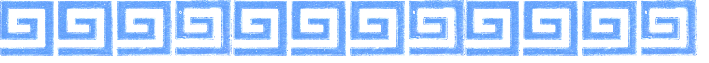
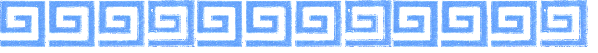
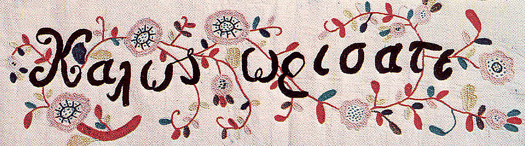

 |
| Guide to Greek Usage in Cataloging | ||
 "Kah-LOS Oh-REE-sat-eh" Welcome! This web site is designed as an aid for people working with Modern Greek text. It is not designed to teach cataloging; cataloging rules and policy are abundantly available elsewhere. This guide is for the library worker who must distinguish and interpret different elements in the Greek language to transcribe and input descriptive bibliographic information. The site is planned to address issues which are language driven, providing explanation and examples in how those issues are resolved according to AACR2 and Library of Congress policy. As the site grows and develops, it is hoped that the information found here, will also please and instruct the reader about Greek culture and language. Original material, and compilation of relevant documentation from the Web, Library of Congress, and Princeton University's Technical Services cataloging documentation by Gisela Kam Acknowledgements This site would not have been possible without the generous help and advice of Bev Szwast, (Technical Service's reigning scanning queen); Jian Bai, Jennifer Lang, John Hernandez (code master); Jeffrey Luttrell (resident Greek consultant) ; Henry Umansky, of the University New Media Center, who provided the magic and beauty of design, and Rodolfo Aiello, compañero, eye of the eagle and unfailing support. |
||
| ©2007 Trustees of Princeton University E-mail comments |
||